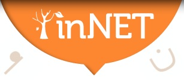
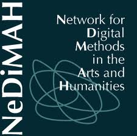

|
Welcome
The mission of DARIAH is to enhance and support digitally-enabled research across the humanities and arts. DARIAH aims to develop and maintain an infrastructure in support of ICT-based research practices.
DARIAH is working with communities of practice to:
- Explore and apply ICT-based methods and tools to enable new research questions to be asked and old questions to be posed in new ways
- Improve research opportunities and outcomes through linking distributed digital source materials of many kinds
- Exchange knowledge, expertise, methodologies and practices across domains and disciplines
|
|
Latest News
Highly detailed or “confidential” microdata from other countries are often not available for research purposes. Or, if they are available, researchers have to go through diverse national accreditation processes and self-finance their access. To enhance access across borders to official microdata for comparative research, Data without Boundaries gives you the unique opportunity to work with data from a number of European countries. This is a continuous call and there will be additional opportunities to apply. The next upcoming *deadline is 15th October 2012*. Additional deadline dates are 15th April and 15th October in 2013 and 2014.
The call is available as pdf (240 kB), instructions can be found on the website.
|
 Best practices in digital language archiving of language and music data
Presentations and panel : Thu 9.15 – 16.45, Fri 9.15 – 12.45 (Neues Seminargebäude) Business meetings: Thu 17.00 – 18.30, Fri 14.00 – 18.00 (Departmental seminar room)
The NeDiMAH working groups "Digital Scholarly Editions" and "Using Large-Scale Text Collections for Research" are organising an expert meeting and a workshop (both on 21 November 2012) at the Huygens Institute for the History of the Netherlands, in The Hague, The Netherlands. Proposals are invited before 10th of September 2012. 1. EXPERT MEETING on Digital Scholarly Editions
The working group on Digital Scholarly Editions of the European Research Network NeDiMAH (Network for Digital Methods in the Arts and Humanities, http://www.nedimah.eu) is organising an Experts’ Seminar on Wednesday, 21 November 2012 at the Huygens Institute for the History of the Netherlands in The Hague. The seminar is being held in conjunction with the 9th conference of the European Society for Textual Scholarship, ‘Editing Fundamentals:
Historical and Literary Paradigms in Source Editing’, 22-24 November 2012 in Amsterdam (http://www.textualscholarship.eu/conference-2012.html).
The NeDiMAH working group on Digital Scholarly Editions seeks to promote the use of existing digital technologies in the production of scholarly editions, bringing together experts from a wide variety of disciplines and time-periods to establish the state of the art and recommend a set of best practices in order to ensure maximum interoperability and long-term preservation of, and access to, digital data. In particular, the topics
which will be addressed at the seminar are: • Theory: What is a digital edition? What is its purpose, and who are the intended users? What, in short, is the nature of the digital editorial endeavour? • Production: What are the various stages in the production of a digital edition?
Standards for digital imaging and basic text encoding are now fairly well established, but there remain several fundamental issues yet to be resolved, such as how one can best deal with documenting and representing textual variation and the basic question of editing the text as opposed to editing the document (i.e. the text in situ). To what extent are collaborative/distributed editions the way forward?
Proposals of not more than 500 words are invited by the 10th of September (to mjd at hum.ku.dk or elena.pierazzo at kcl.ac.uk). Please note that for this seminar we are particularly interested in methodological and theoretical contributions, rather than project reports. Speakers will be allotted 15 minutes for their presentations followed by 10 minutes of discussion. The seminar will close with a general round-table discussion.
We are very happy to announce that DARIAH-EU is on twitter now. Here is the link to our twitter page: https://twitter.com/DARIAHeu
Date: Tuesday 23 October - Thursday 25 October 2012
Venue: Dublin and Maynooth, Ireland
A workshop jointly organised by:
Digital Repository of Ireland (DRI)
Digital Enterprise Research Institute (DERI)
Digital Humanities Observatory (DHO)
Digital Research Infrastructure for the Arts and Humanities (DARIAH-EU)
The focus of this event is to engage academia, industry, cultural institutions and public bodies to identify the key research challenges in digital humanities, and to further build the academic-industry partnerships that will enable adoption of digital humanities skills, technologies and tools. This focus will extend to the innovative use of digital humanities technologies in the public sector demonstrating social benefit, such as the digitisation of the Irish census and the use of open linked public data. During the three days, participants will expand their skills through a series of workshops lead by subject matter experts, in the areas of data visualisation and in the application of linked data to leverage the semantic web for scholarly humanities research. This workshop will combine a day of hands-on practical application with master classes and lectures and a day-long symposium drawing together academic and industry practitioners. Day 1: Tuesday 23rd October 2012
The Importance of Digital Humanities, Case Studies in Action, and Academic-Public-Industry partnerships achieving more.
Venue: Croke Park Stadium, Dublin
Day 2: Wednesday 24th October 2012
Intellectual Property, Licensing, Copyright, Semantic Web and Linked Data for Digital Humanities, Digital Humanities Skillset, and Findings and Discussion of Digital Humanities Challenges & Opportunities.
Venue: Royal Irish Academy, Dublin
Day 3: Thursday 25th October 2012
Skills Workshops: Data Visualisation, Data Modeling, and Linked Data.
Venue: Labs, NUI Maynooth
|
|
|
|
|
|
Page 10 of 30 |
|
Information brochure

Download PDF 
|